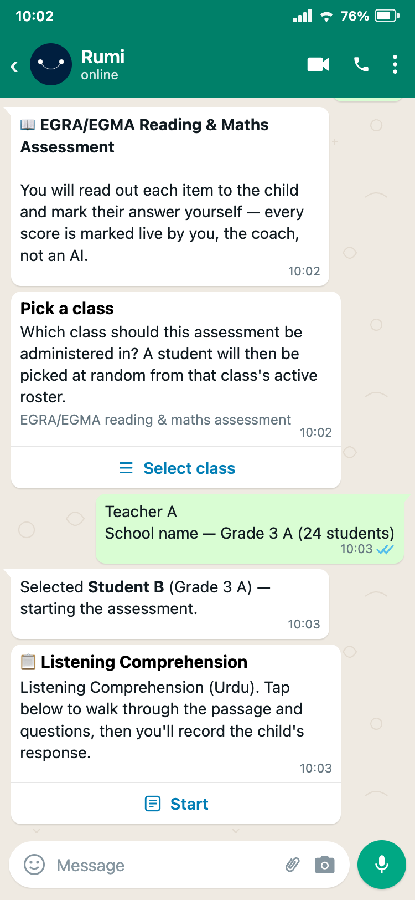
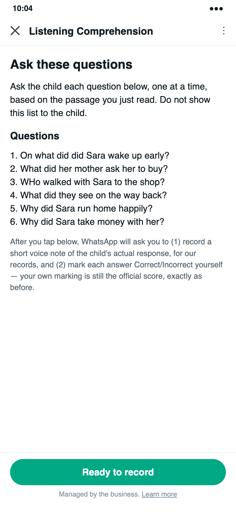
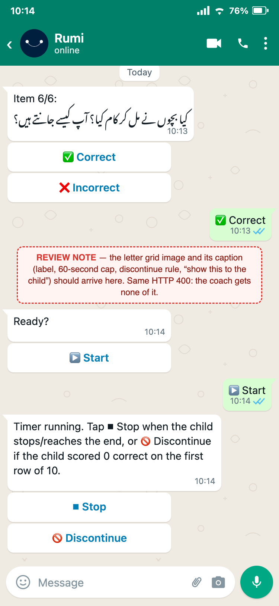
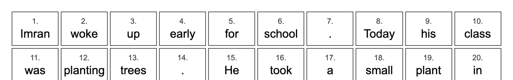
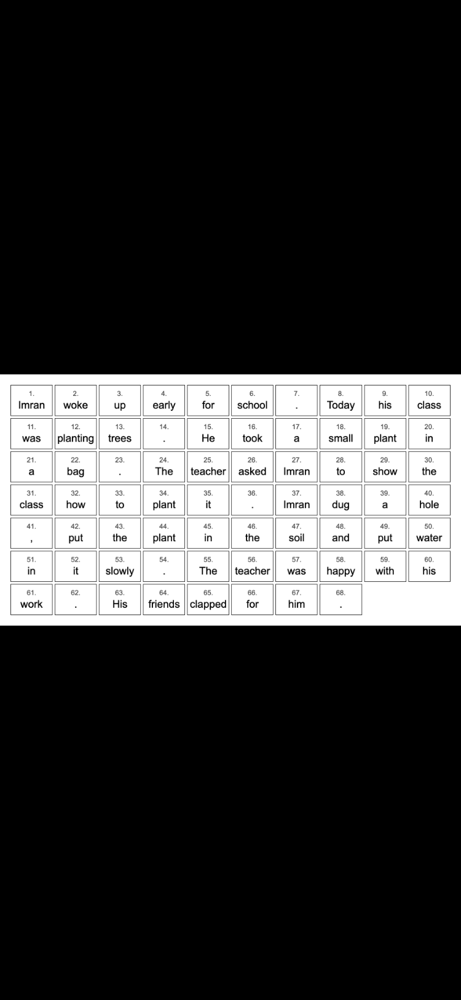
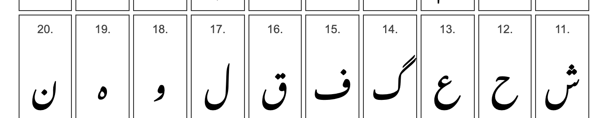
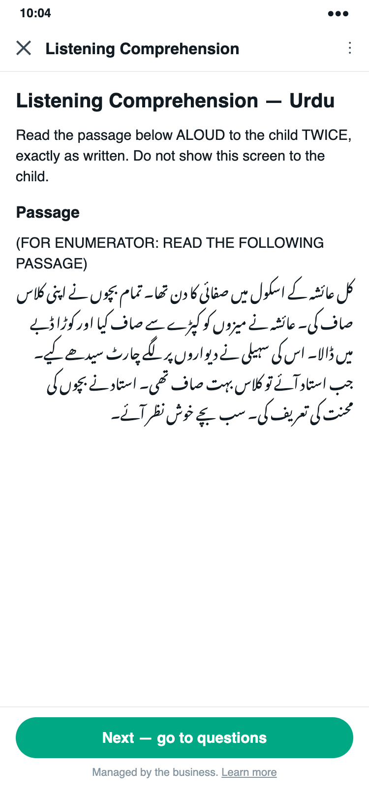

Sabeena's EGRA/EGMA test flow on the main Rumi bot's staging server, read against the plan we wrote for a five-minute, coach-run, AI-checked child assessment. What is done, what is not, what falls short, and what was done well.
Which bot. It is the main Rumi bot, not the NIETE bot. All eight commits are on the staging branch only, behind a switch that is on for staging and limited to Islamabad test accounts. Nothing has reached production.
What it is. A careful, well-documented first build that puts almost the whole May 2026 enumerator test into WhatsApp chat. The coach taps Correct or Incorrect for every item, one message at a time. No AI is used anywhere, and a database rule stops an AI score from ever being stored.
How it compares with the plan. It builds a different product. The plan is a five-minute test: the coach records one voice note per block while the child reads from a printed card, Rumi pre-fills a checking form, and the coach corrects it. This build takes about 22 minutes per child, which is today's enumerator time, and the one-message-per-item pattern is the one the field team rejected on 11 September.
Does it work today. Not end to end. The test pictures never reach the coach, and the one subtest with audio would lose the coach's marks when it saves. No real child has been assessed yet: across 9 staging sessions, one subtest result was ever saved.
What to keep. The item bank, the code-drawn stimulus pictures, the random draw from the real roster, the switch-and-region gate, and the chat-loop fix are all good foundations for the plan's version.
These are small fixes, and each one matters before a real child is tested. The first touches the database production shares, so it needs a go.
anon and authenticated roles can read, insert and delete rows. The table lives in the database that production shares, and it already holds one child's name. Switching on row-level security fixes it; the bot uses the service key, so nothing breaks. needs a go: production database/egra, see every class and receive a random child's full name.The goals come from the 15 September call and the plan. "Contradicts" means the build does the opposite, or rules the plan's version out.
| Goal | Verdict | What the build does |
|---|---|---|
| Five minutes per child | Contradicts | About 22 minutes per child, the same as today's enumerator. |
| Five children in 30 minutes per coach per day | Contradicts | About 110 minutes for five children. |
| The coach records; Rumi pre-fills; the coach checks and corrects | Contradicts | The coach marks every item live. A database rule pins the AI-score field to "not attempted", so AI marks cannot be stored. |
| Keep the AI's answer, the coach's answer and the audio side by side | Not built | Only the coach's answer is kept. Audio is captured for one subtest, and that save currently fails. |
| The five-minute test (Urdu story + questions, first sounds, made-up words, English story, maths: numbers aloud, quick sums, photo of written sums) | Contradicts | Close to the reverse. It keeps what the plan drops (listening comprehension, 100-letter grids, 50-word list, patterns) and leaves out what the plan keeps. Only the two stories and their questions overlap. |
| The child reads from a printed card; the phone only records | Contradicts | The child reads from the coach's phone, and the picture is the enumerator's numbered sheet. |
| A checking form in WhatsApp, pre-filled, in Urdu | Not built | The only Flow shows two read-only English instruction screens and collects nothing but "confirmed". |
| An algorithm picks the children; the coach does not choose | Partly | The child is random within a class, but the coach picks the class, the same child can be drawn twice, and cancelling lets the coach draw again. The draw is not recorded. |
| Results linked to the child, school and grade, so repeat tests show growth | Not built | The code knows the child's database ID but never saves it. No school or grade is saved. |
| Reuse the existing assessment tables (no new tables) | Contradicts | A new table. The live database already has aser_sessions and reading_assessments with AI and coach columns, audio and word timings. |
| Islamabad first, off by default until the time target is met | Built | Switch plus region gate; inert for everyone else, with tests. |
| Urdu, then English, then maths; based on EGRA, not ASER | Built | Uses the real fielded EGRA/EGMA content in that order. |
Off by default, limited to Islamabad accounts, inert for everyone else, with tests proving it. TESTING.md lists its own gaps honestly, including the class-choice bias.
The fielded EGRA/EGMA item bank was recovered with answer keys, built by script and checked by tests. It is the most reusable piece of the branch.
Stimulus images are rendered from the exact item text, in a correctly embedded Nastaliq font, right to left, and checked back against the item bank. Using AI image generation for test items would have been wrong; this was the right call.
The coach no longer types a name. The child is drawn on the server, uniformly, from the real roster. That is a genuine step toward "the coach does not choose".
The voice note goes to our own private storage straight away, not left as a WhatsApp media ID that expires. Correctly, no audio is assumed inside the Flow.
Flow completions are matched to the right session; the voice claim only fires in the right step. The chat-loop fix was traced in the logs to its real cause, with a failing test written first.
/egra command and the switch-and-region gateThe estimate walks the code message by message for one child: 113 bot messages and 96 coach actions (83 taps, 11 typed answers, 2 voice notes). The time with the child comes from the May enumerator medians for the same 14 subtests (13.8 minutes). WhatsApp round trips, typing wrong-item lists and re-asking questions for the voice note add the rest.
The code is organised sensibly: small single-purpose services, a gate, a state machine in one handler, and switches that keep it inert. The problems are in the edges: what happens when a send or save fails, what the tests fake, and a few formulas.
/cancel becomes the child's name at the name prompt and "not a number" at the typed prompts. Other commands are swallowed for up to an hour. The voice note cannot be skipped./reading test that is disabled there, and Tanzania teachers to the English test.


The pictures are well made as images: clean, correct Unicode, correct Nastaliq joining and right-to-left order. The problem is what they are designed as. They are the enumerator's score sheet, shown to the child on the coach's phone.




What the call decided. The impact team's algorithm names the children from the class register; the coach never chooses. Each pick comes with named alternates for absent children (the Usser study took odd roll numbers and replaced an absent child with the next even number). Five children per visit.
What was built.
| Question | As built | Why it matters |
|---|---|---|
| Who chooses the class? | The coach, from a list of every Islamabad class, capped at 9 rows in no set order | A coach can always pick the strongest class. The author flagged this herself. |
| How is the child chosen? | One child per tap, uniformly at random, on the server | Good: the coach cannot type a name in the normal path. |
| Can a child be drawn twice? | Yes. Each child is a separate draw | Five draws from a class of 9 repeat a child 74% of the time; 62% for a class of 12. |
| Can the coach redraw? | Yes. /cancel then /egra gives a fresh draw, and it happened twice on 18 Sep | A coach can keep drawing until they like the child. Nothing records it. |
| Absent children? | No alternates and no reason codes; "Type a name instead" skips the draw | Absent children are usually weaker. Quiet replacement pushes results up by an unknown amount. |
| Is the draw recorded? | No. The child's ID stays in session memory and is never saved | Nobody can check afterwards who was drawn against who was tested. |
| Repeat testing across visits? | No memory of who was tested before | Growth over time needs the same child linked across tests. |
| How big is the pool? | 7 classes, 41 children (class sizes 1 to 12), no grade 3 class | No class can reach the call's 15-per-class benchmark. The Islamabad sections named on the call are not in this database yet. |
student-selection.service.js, already on staging, orders never-tested children first, picks several at once, checks attendance and labels roll numbers. It needs a seeded shuffle instead of Math.random, a saved order, and alternates with reason codes./cancel work everywhere. Update TESTING.md, which still says the Flow and table are not live.Four reviewers worked in parallel on a frozen copy of the 42 changed files at staging head 554c6a8d. Every headline claim on this page was then checked again against the code, the live database (read-only, counts only), the staging logs or Meta.
Deploy, switches, Flow status, table, rows and usage, with how each was checked.
Blockers, serious and minor findings with file and line, test run, what is unverified.
33-row conformance table, the message-by-message time estimate, the battery, and the strategic read.
The draw against the call, the full proposed design with fields, the power arithmetic, and the data model.
Stimulus images measured at phone size, the Flow rendered, and every coach-facing string checked.
783116cc · d31fd846 · 6757dcf6 · b1a2513e · 5fd2da1e · 3c024544 · 1901c5a3 · e81dbc03, all 16–18 Sep, staging only. No later commit touches these files.
Children's names, phone numbers and database IDs are left out of this page. Full-size stimulus images and the code snapshot are kept in the team's project folder.